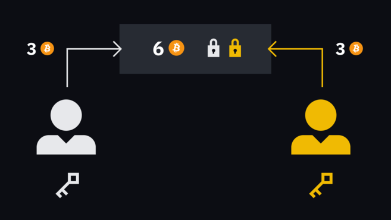
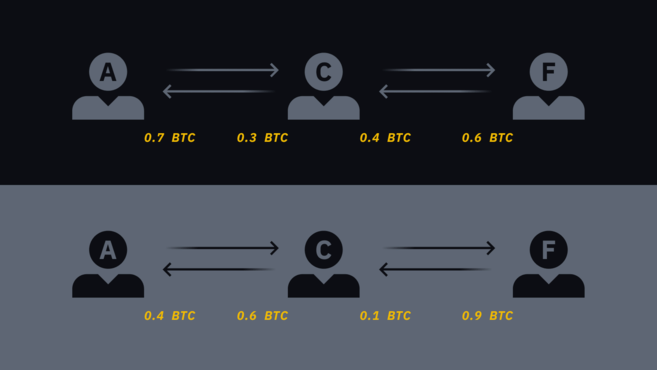
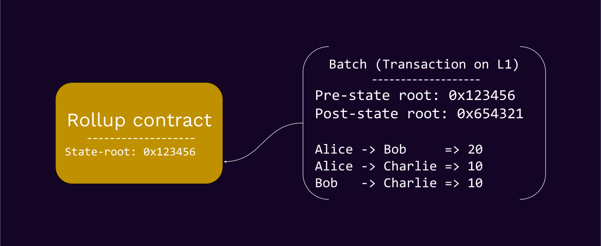
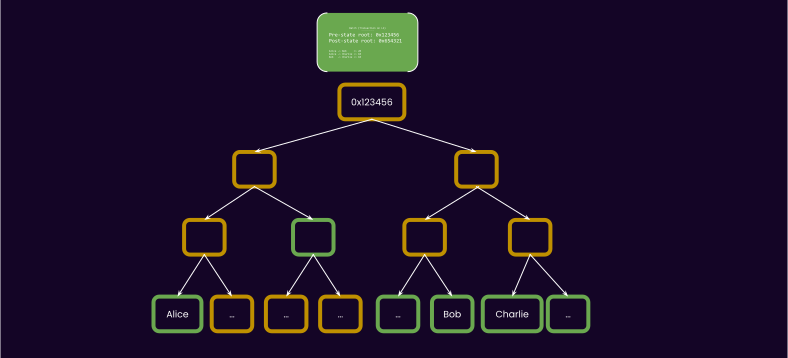
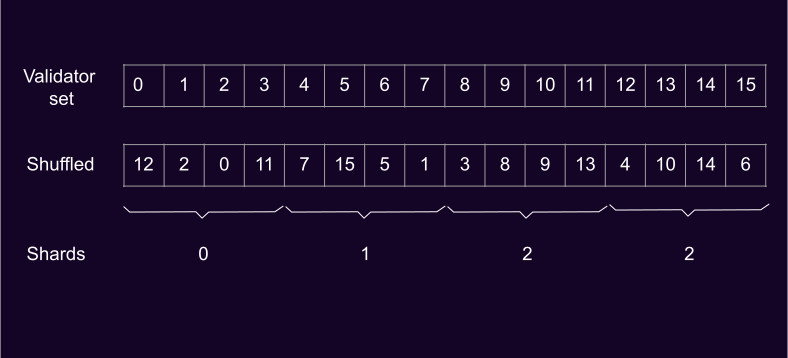
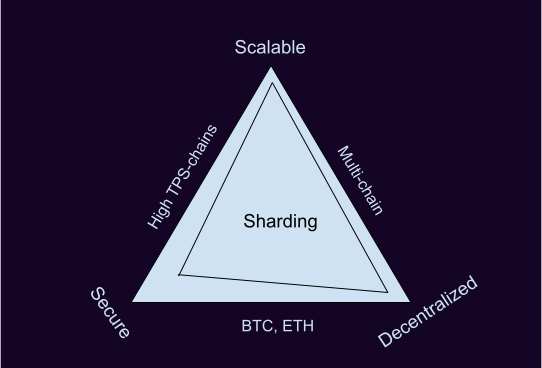
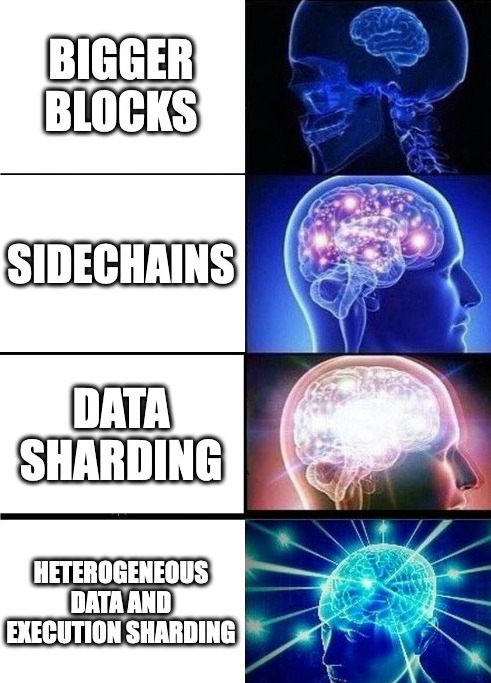
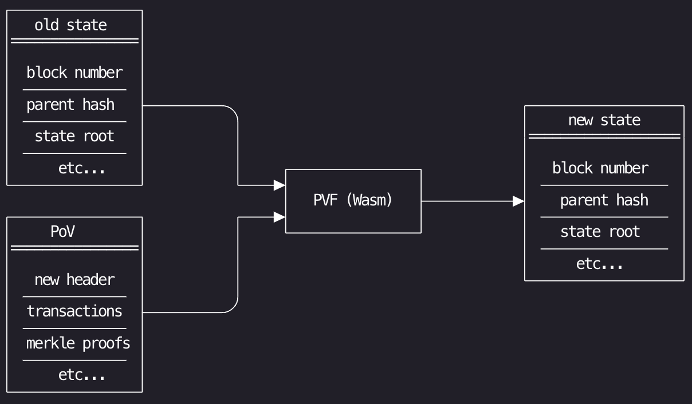

<!DOCTYPE html>
<html lang="en">

<head>
  <meta charset="utf-8" />
  <meta name="viewport" content="width=device-width, initial-scale=1.0, maximum-scale=1.0, user-scalable=no" />

  <title>Blockchain Scalability History</title>
  <link rel="shortcut icon" href="./../../../assets/favicon.ico" />
  <link rel="stylesheet" href="./../../../dist/reset.css" />
  <link rel="stylesheet" href="./../../../dist/reveal.css" />
  <link rel="stylesheet" href="./../../../assets/styles/PBA-theme.css" id="theme" />
  <link rel="stylesheet" href="./../../../css/highlight/shades-of-purple.css" />

  <link rel="stylesheet" href="./../../.././assets/styles/custom-classes.css" />

</head>

<body class="site">
  <header class="site-header">
    <!-- This logo is a link only on the watching server, not the production build -->
      
  </header>
  <main class="reveal">
    <article class="slides">
      <section  data-markdown><script type="text/template">

# Blockchain Scalability History
</script></section><section  data-markdown><script type="text/template">
### Outline

<pba-flex center>

1. [Bitcoin](#bitcoin)
1. [Ethereum](#ethereum)
1. [Polkadot](#polkadot)
1. [References](#references)

</pba-flex>

<aside class="notes"><p>In the Bitcoin section we&#39;ll cover attempts to add scalability to Bitcoin, including payment channels used by the Lightning Network.
Then we&#39;ll move onto Ethereum scalability history and cover topics such as side chains, state channels, Plasma, rollups and sharding.
Finally we&#39;ll cover Polkadot&#39;s approach to scalability and how it compares to the rollup-centric design and some ideas for future.
At the end of the lecture, for the curious readers, there&#39;s be links for further reading.</p>
</aside></script></section><section  data-markdown><script type="text/template">


## Bitcoin

Bitcoin has a block time of 10 minutes and a block size of 1MB.

What if try to increase that limit?

<pba-flex center>

- Bitcoin Cash has a limit of 32MB.
- Bitcoin SV removed the limit altogether.
- Is there a problem with increasing the limit?

</pba-flex>
</script></section><section ><section data-markdown><script type="text/template">
### Payment channels



<pba-flex center>

1. Alice and Bob lock some funds in a "smart contract".
1. All transfers between them happen off-chain where both parties
   sign each transaction which also invalidates previous state.
1. To close the channel, participants submit the last agreed-upon state of the channel on-chain.

</pba-flex>

<aside class="notes"><p>Bitcoin doesn&#39;t really have smart contracts, so it uses 2-out-of-2 multisignature transactions instead.</p>
</aside></script></section><section data-markdown><script type="text/template">
### Payment channels: Hashed Timelock Contracts

A hashlock is a condition placed on a transaction dictating that you can only spend funds by proving that you know a secret.

A timelock is a condition that prevents you from spending funds before a certain time.
It’s specified either as an actual time, or a specified block height.

Hashed Timelock Contracts (HTLCs) are combining hashlocks and timelocks to create conditional payments – the receiver has to provide a secret before a certain time, or the sender can reclaim the funds.

<aside class="notes"><p>Each new update invalidates previous updates.
To make this part of the state channel work, the locking and unlocking mechanisms have to be properly designed so that old state updates submitted to the blockchain have a chance to be corrected by the newer state updates which replaced them.
The simplest way is to have any unlocking attempt start a timer, during which any newer update can replace the old update (restarting the timer as well).
When the timer completes, the channel is closed and the state adjusted to reflect the last update received.</p>
</aside></script></section><section data-markdown><script type="text/template">
### Payment channels: Security

<pba-flex center>

- Someone has to stay online to protect each individual party's interests until the channel is closed.
- In the Lightning Network the concept of "watchtower" has been developed, where trust can be outsourced to watchtower nodes to monitor for fraud.

</pba-flex>

<aside class="notes"><p>If a malicious party creates numerous channels and forces them to expire at the same time, which would broadcast to the blockchain, the congestion caused could overwhelm the capacity of the block.
A malicious attacker might use the congestion to steal funds from parties who are unable to withdraw their funds due to the congestion.
We&#39;ll come to other limitations of channels in the state channels later.</p>
</aside></script></section><section data-markdown><script type="text/template">
### Payment channels: Lightning Network



<aside class="notes"><p>On the base chain, your fee is based solely on the space your transaction takes up in a block – the value being transmitted doesn’t matter – $1 and $10,000,000 payments cost the same.
In contrast, there’s no such thing as block space within the Lightning Network.
If Alice wants to send 0.3 BTC to Frank, she pushes 0.3 BTC to Carol’s side of the channel.
Then Carol pushes 0.3 BTC from her local balance in the channel with Frank.
In this scenario, Alice is effectively eating into Carol’s liquidity.
Without any kind of incentive, Carol may not want to weaken her own position.</p>
</aside></script></section></section><section  data-markdown><script type="text/template">


## Ethereum

We'll look into:

<pba-flex center>

- Sidechains
- State channels
- Rollups
- Sharding

</pba-flex>
</script></section><section  data-markdown><script type="text/template">
### Sidechains

Let's create another "fork" of the chain with its own validator set and security.

To move assets between different chains, a bridge is implemented as a smart contract on Ethereum.

This is partially what Polygon is to Ethereum.

<pba-flex center>

- Bridges have the "weakest link" problem.
- What if a sidechain stops producing blocks? The funds are "stuck".
- If a sidechain is cheaper than Ethereum then it’s going to be proportionally less secure than Ethereum.

</pba-flex>
</script></section><section ><section data-markdown><script type="text/template">
### State channels

This is a generalization of payment channels:

<pba-flex center>

1. Part of the blockchain state is locked in a smart contract.
1. Participants update the state amongst themselves (off-chain).
1. Participants submit the state back to the blockchain.

</pba-flex>

State channels might be good for games, e.g. card-based ones.

<aside class="notes"><p>There&#39;s also a concept of virtual channels that do not require to open and close them with on-chain transactions.</p>
</aside></script></section><section data-markdown><script type="text/template">
### State channels: limitations

<pba-flex center>

- Cannot be used to send funds off-chain to people who are not yet participants
- Cannot be used to represent objects that do not have a clear logical owner (e.g. Uniswap)
- Require a large amount of capital to be locked up

</pba-flex>
</script></section></section><section  data-markdown><script type="text/template">
### Plasma

Are like sidechains, but the the Merkle root of each chain in published on Ethereum.
The roots act sort of like “save points” in the blockchain.

Limitations:

<pba-flex center>

- Not possible to do generic computation: Polygon only supports ERC20 and ERC721 token transfers on its Plasma chain.
- Withdrawal period of 7 days on Polygon (challenge period)

</pba-flex>

<aside class="notes"><p>Fun fact: Astar used to be called Plasm.
Pretty much obsoleted because of the limitations by the rollup technologies.</p>
</aside></script></section><section  data-markdown><script type="text/template">
### Rollups

Rollups bundle (or ’roll up’) many transactions into a single transaction on layer 1.
</script></section><section ><section data-markdown><script type="text/template">
### Optimistic Rollups

<pba-cols>
<pba-col center>

Optimistic rollups are 'optimistic' in the sense that transactions are assumed to be valid, but can be challenged if necessary.
If an invalid transaction is suspected, a fraud proof is submitted and resolved onchain.

</pba-col>
<pba-col center>


</pba-col>
</pba-cols>
</script></section><section data-markdown><script type="text/template">
### Optimistic Rollups: Transaction bundle



On Ethereum, these are posted to a so called "calldata" and in the future to the blob storage provided by Danksharding.

<aside class="notes"><p>We will cover some aspects of Danksharding soon.</p>
</aside></script></section><section data-markdown><script type="text/template">
### Optimistic Rollups: How it works

<pba-flex center>

- Optimistic rollup validators must provide a **bond** before producing blocks.
- Other rollup validators validate the blocks using their copy of the rollup state.
- In case someone finds the state transition invalid, they can submit a fraud proof.

</pba-flex>

<aside class="notes"><p>This bond can be slashed if the validator posts an invalid block or builds on an old-but-invalid block (even if their block is valid).
This way optimistic rollups utilize cryptoeconomic incentives to ensure validators act honestly.</p>
</aside></script></section><section data-markdown><script type="text/template">
### Optimistic Rollups: Fraud proofs


</script></section><section data-markdown><script type="text/template">
### Optimistic Rollups: Multi-round fraud proofs

The main idea of multi-round fraud proofs (aka interactive fraud proofs) is to
reduce the number of computational steps by using interactive bisection protocol.
</script></section><section data-markdown><script type="text/template">
### Multi-round fraud proofs: steps

It requires the block producer and the challenger to merkleize the entire state of VM (including memory cells, registers, etc).

The process is divided into steps.
The computation state at each step can be described as a short commitment (merkle root) to the output of the VM.

If the block producer fails to provide the one-step proof, or the L1 verifier deems the proof invalid, they lose the challenge.
</script></section><section data-markdown><script type="text/template">
### Optimistic Rollups: Security

The transactions posted on the Layer 1 are non "finalized" even if Layer 1 finalized the block including them until the challenge period has ended and there were no valid fraud proofs.

The length of the challenge period is a trade-off between security and finality latency.

Security model relies on at least one honest node executing rollup transactions and submitting fraud proofs to challenge invalid state transitions.
</script></section></section><section ><section data-markdown><script type="text/template">
### zkRollups


zkRollups come in 2 flavors:

<pba-flex center>

- zkSNARKs
- zkSTARKs

</pba-flex>

Just like Optimistic Rollups, zkRollups bundle transactions and submit them along with a succinct (short) validity proof.

Checkout https://zkhack.dev/whiteboard/ to learn more about SNARKs.

<aside class="notes"><p>As a scalability technology, the zk part of the zkRollups is optional and only used by privacy-oriented applications.</p>
</aside></script></section><section data-markdown><script type="text/template">
### SNARK scalability

> "The total prover overhead relative to direct witness checking can be 1 million to 10 million or more."

Source: https://a16zcrypto.com/measuring-snark-performance-frontends-backends-and-the-future/
</script></section><section data-markdown><script type="text/template">
### zkRollups advantages

- Minimize trust assumptions about block validatity
- Proofs can be verified by light clients
- Batch construction is parallelizable
- Can provide privacy if they are actually zk
</script></section><section data-markdown><script type="text/template">
### zkRollups challenges

- Sequencer centralization and censorship
- Latency for producing a block
- Complexity of the technology makes it hard to audit
- Double spend attacks are still possible (51% attack)
</script></section></section><section ><section data-markdown><script type="text/template">
### Sharding

Sharding is the process of splitting a database horizontally to spread the load - the term comes from the database world.

There are two types of blockchain sharding:

<pba-flex center>

- Data sharding
- Execution sharding

</pba-flex>

<aside class="notes"><p>Data sharding means that not every node store every piece of data.
Execution sharding means that not every validator checks every state transition.
Bitcoin and Ethereum don&#39;t have execution sharding, they are replicated state machines.
We will cover both data and execution sharding in depth in the next lecture.</p>
</aside></script></section><section data-markdown><script type="text/template">
### Execution sharding via random sampling


</script></section><section data-markdown><script type="text/template">
### Execution sharding and security

How is splitting validators into groups is different from splitting into separate chains?

1. The random sampling prevents the attacker from concentrating their power on one shard.
1. If even one shard gets a bad block, the entire chain reorgs to avoid it.

<aside class="notes"><p>In a 100-chain multichain ecosystem, the attacker only needs ~0.5% of the total stake to wreak havoc: they can focus on 51% attacking a single chain.
In a sharded blockchain, the attacker must have close to ~30-40% of the entire stake to do the same (in other words, the chain has shared security).
The second point ensures that processing messages is also secure.</p>
</aside></script></section></section><section  data-markdown><script type="text/template">
### Sharding on the Scalability Trilemma



<aside class="notes"><p>Scalable: it can process far more transactions than a single node
Decentralized: it can survive entirely on consumer laptops, with no dependency on &quot;supernodes&quot; whatsoever
Secure: an attacker can&#39;t target a small part of the system with a small amount of resources; they can only try to dominate and attack the whole thing</p>
</aside></script></section><section  data-markdown><script type="text/template">
## Polkadot

Polkadot is a scalable heterogenous sharded multi-chain network.
</script></section><section ><section data-markdown><script type="text/template">
### Specialization Leads to Scalability

Systems which try to do everything will not do anything the best.

Generalized blockchains like Ethereum are not optimized.

Heterogeneity is the way.

<aside class="notes"><p>Protocols like dYdX are moving from a smart-contract/rollup to a separate L1 blockchain.</p>
</aside></script></section><section data-markdown><script type="text/template">
### Galaxy Brain Idea


</script></section></section><section  data-markdown><script type="text/template">
### Parachains

Each parachain is a separate L1 blockchain except for it delegates it's finality to Polkadot.

To account for the fact that block producers of parachains are not responsible for finality, they are called Collators.
</script></section><section  data-markdown><script type="text/template">
### Mechanics of Parachain Validation

Imagine:

- 1000 Validators
- 100 Parachains
- 30-40 Shared Randomly Assigned Validators per Parachain
- Disputes Resolution

We are able to derive strong security guarantees while splitting up our validators across different parachains.
</script></section><section  data-markdown><script type="text/template">
### Parachain Validation Function (PVF)

Validators can verify the state transition of any Parachain given 2 simple pieces of data:

- The Parachain's Wasm Runtime
- The Parachain's State Proof + Block (Proof of Validity)
</script></section><section  data-markdown><script type="text/template">
### Proof of Validity (PoV)

A proof of validity constructed by Cumulus:

```rust
/// The parachain block that is created by a collator.
///
/// This is send as PoV (proof of validity block) to the relay-chain
/// validators. There it will be passed to the parachain validation
/// Wasm blob to be validated.
#[derive(codec::Encode, codec::Decode, Clone)]
pub struct ParachainBlockData<B: BlockT> {
	/// The header of the parachain block.
	header: B::Header,
	/// The extrinsics of the parachain block.
	extrinsics: sp_std::vec::Vec<B::Extrinsic>,
	/// The data that is required to emulate the storage
    /// accesses executed by all extrinsics.
	storage_proof: sp_trie::CompactProof,
}
```
</script></section><section  data-markdown><script type="text/template">
### Validation process


</script></section><section  data-markdown><script type="text/template">
### Execution sharding: Approval-voting

For each parachain block we have an ordered list of validator to check it.

The ordering is not known ahead of the time.

If someone does not show up, we require even more checkers like a Hydra would regrow two heads.

<aside class="notes"><p>These properties allow us to finalize a block without waiting for the challenger period in the happy path.
We will cover the protocol in more detail in the next lecture.</p>
</aside></script></section><section  data-markdown><script type="text/template">
### Comparing Parachains with Rollups

In some sense, parachains act like optimistic rollups with non-interactive fraud proofs.
There are a few crucial differences:

<pba-flex center>

- All parachains get the same security no matter how many collators they have
- The set of optimistic rollup sequencers is managed and limited by a smart contract
- Optimistic rollup finality is limited by the challenge period
- Parachains do not compete with each other for blockspace
- Rollups use multisigs for upgrading their code

</pba-flex>

<aside class="notes"><p>In optimistic rollups sequencer selection logic lives in a smart contract of the host because the smart contract needs to accept blocks that may be bad and may not be executed and needs to filter out spam.
Parachains, like ZK rollups, can encapsulate the sequencer-selection logic within their validation code.
The last point means that if there&#39;s a lot of activity on one parachain, it doesn&#39;t affect fees on the other parachains.</p>
</aside></script></section><section  data-markdown><script type="text/template">
### Data Availability Problem

Optimistic rollups require all of the data in blocks to be available to generate fraud proofs.
Rollups on Ethereum deal with this by simply posting all of the rollup blocks on to the Ethereum chain and relying on it for data availability, therefore using Ethereum as a data availability layer to dump data on.

With Polkadot sharding, how do we ensure that PoVs can be downloaded to start a dispute process if they are not stored by everyone?
</script></section><section  data-markdown><script type="text/template">
### Beyond

<pba-flex center>

- Polkadot Cubed
- Blitz Chains
- Non-Persistent Trie

</pba-flex>
</script></section><section  data-markdown><script type="text/template">
<!-- .slide: data-background-color="#4A2439" -->

# Questions
</script></section><section  data-markdown><script type="text/template">
## References

1. https://academy.binance.com/en/articles/what-is-lightning-network
1. https://vitalik.ca/general/2021/01/05/rollup.html
1. https://vitalik.ca/general/2021/04/07/sharding.html
1. https://pep.wtf/posts/parachains-consensus/
1. https://zkhack.dev/whiteboard/
</script></section>
    </article>
  </main>

  <script src="./../../../dist/reveal.js"></script>

  <script src="./../../../plugin/markdown/markdown.js"></script>
  <script src="./../../../plugin/highlight/highlight.js"></script>
  <script src="./../../../plugin/zoom/zoom.js"></script>
  <script src="./../../../plugin/notes/notes.js"></script>
  <script src="./../../../plugin/math/math.js"></script>
  <script>
    function extend() {
      var target = {};
      for (var i = 0; i < arguments.length; i++) {
        var source = arguments[i];
        for (var key in source) {
          if (source.hasOwnProperty(key)) {
            target[key] = source[key];
          }
        }
      }
      return target;
    }

    // default options to init reveal.js
    var defaultOptions = {
      controls: true,
      progress: true,
      history: true,
      center: true,
      transition: 'default', // none/fade/slide/convex/concave/zoom
      slideNumber: true,
      plugins: [
        RevealMarkdown,
        RevealHighlight,
        RevealZoom,
        RevealNotes,
        RevealMath
      ]
    };

    // options from URL query string
    var queryOptions = Reveal().getQueryHash() || {};

    var options = extend(defaultOptions, {"width":1400,"height":900,"margin":0,"minScale":0.2,"maxScale":2,"transition":"none","controls":true,"progress":true,"center":true,"slideNumber":true,"backgroundTransition":"fade"}, queryOptions);
  </script>


  <script>
    Reveal.initialize(options);
  </script>
</body>

</html>
